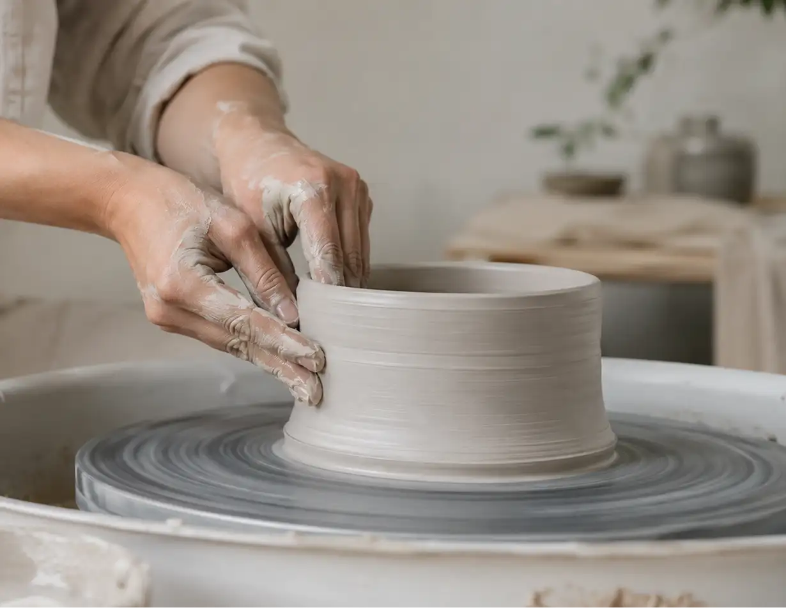
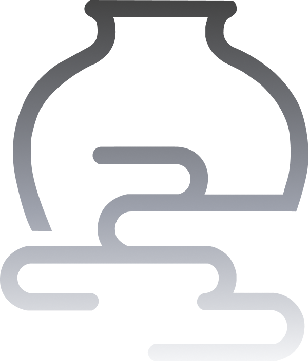

도자기
“오래 남는 형태와 손의 흔적”
도자기는 흙이 손을 지나 형태가 되고, 불을 지나
단단하게 남은 소재입니다. 유무에서는 연약한 재료가
오래 머무는 사물이 되는 과정과, 손끝으로
빚어진 표면의 감각을 의미합니다.
유무는 선명하게 보이는 아름다움보다,
흐릿하지만 오래 남는 감각에 주목합니다.
인테리어 오브제는 처음 공간에 놓였을 때 분명한 존재감을 가지지만,
시간이 지나면 일상의 배경처럼 자연스럽게 스며듭니다.
그러나 그 사물은 사라지지 않고 늘 같은 자리에 머물며,
공간의 분위기를 조용히 완성합니다.
유무는 이처럼 있는 듯 없는 듯하지만 분명히 존재하는 사물의 가치를 담고자 합니다.
강하게 드러나기보다 조용히 머무르고,
눈에 띄지 않아도
공간에 감각의 흔적을 남기는 오브제를 제안합니다.
겉으로는 ‘있음과 없음’을 떠올리게 하지만,
브랜드 안에서는 유약의 釉와 안개의 霧를 함께 담습니다.
표면에 남는 촉감과
공간에 머무는 흐릿한 감각.
유무는 이 두 의미를 바탕으로
오래 남는 감각의 오브제를 만듭니다.
도자기 실루엣은 흙이 손과 불을 지나 형태가 되고, 오래 머무는 물성으로 남는 과정을 뜻합니다.

부드러운 곡선은 공간에 낮게 머무는 안개의 흐름, 사라진 뒤에도 남는 분위기를 뜻합니다.